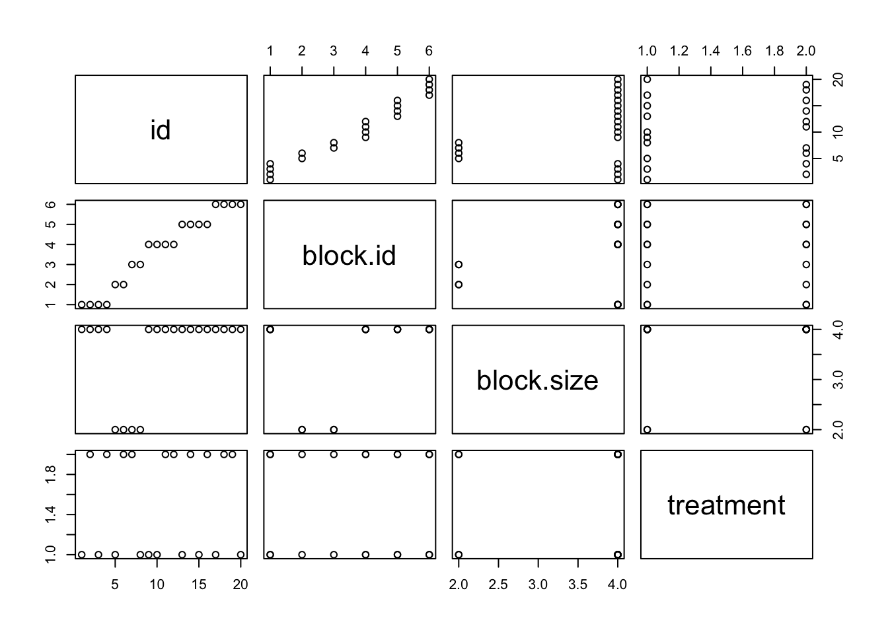
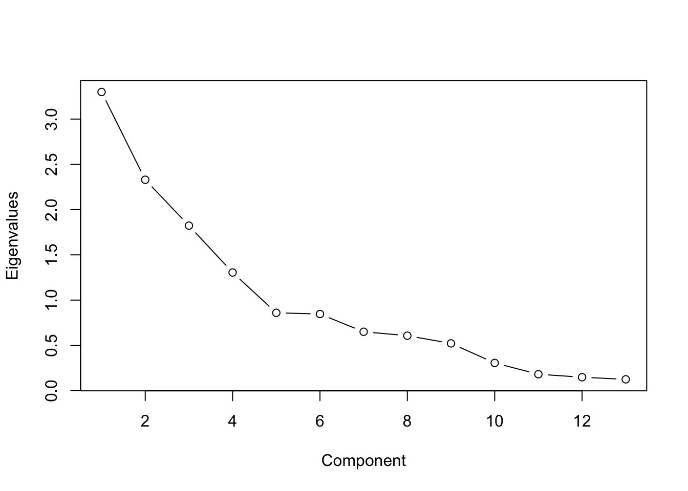
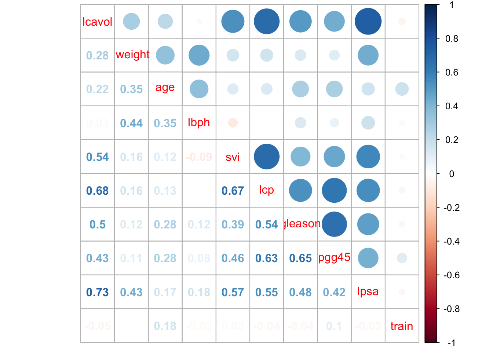

Chapter 24 Clinic Trail Design
24.1 Regulation
- ICH Guideline for Good Clinical Practice E6 – current version
- ICH E9 Statistical principles for clinical trials
- Declaration of Helsinki – Ethical Principles for Medical research Involving Human Subjects – current version
- ISO 14155 – Clinical investigation of medical devices for human subjects – Good Clinical Practice – current version
- ISO 20916 - In vitro diagnostic medical devices — Clinical performance studies using specimens from human subjects — Good study practice – current version
- EMA (European Medicines Agency) Missing data in confirmatory clinical trials
- EMA (European Medicines Agency) Investigation of bioequivalence
- Eegulation (EU) 536/2014
试者分配给分析集。
24.2 Randomization
24.2.1 Simple randomization
Randomization based on a single sequence of random assignments is known as simple randomization.
对于两个治疗组（对照组与治疗组），硬币的侧面（即正面-对照组，反面-治疗）确定每个受试者的分配。其他方法包括使用经过洗牌的纸牌（例如，偶数控制，奇数处理）或掷骰子（例如，低于并等于3控制，超过3处理）这种随机方法简单易行，可在临床研究中实施。在大型临床研究中，可以相信简单随机会在组之间生成相似数量的主题。但是，在相对较小的样本量临床研究中，随机化结果可能会出现问题，从而导致组中参与者的数量不相等。
set.seed(888)
treatment <- c("A","B")
simple.list <- sample(treatment, 20, replace=TRUE)
cat(simple.list,sep="\n")## B
## A
## A
## A
## A
## A
## A
## B
## A
## B
## B
## B
## A
## A
## A
## A
## A
## B
## A
## Atable(simple.list)## simple.list
## A B
## 14 624.2.2 Block randomization
The block randomization method is designed to randomize subjects into groups that result in equal sample sizes. This method is used to ensure a balance in sample size across groups over time. Blocks are small and balanced with predetermined group assignments, which keeps the numbers of subjects in each group similar at all times. The block size is determined by the researcher and should be a multiple of the number of groups (i.e., with two treatment groups, block size of either 4, 6, or 8). Blocks are best used in smaller increments as researchers can more easily control balance.
块随机化方法旨在将受试者随机分组，从而产生相同的样本量。使用此方法可确保随着时间的推移，各个组之间的样本量保持平衡。区块很小，并且通过预定的小组分配来平衡，这使每个小组中的被试人数始终保持相似。区块大小由研究人员确定，并且应为组数的倍数（即，对于两个治疗组，区块大小为4、6或8）。最好以较小的增量使用块，因为研究人员可以更轻松地控制平衡。
After block size has been determined, all possible balanced combinations of assignment within the block (i.e., equal number for all groups within the block) must be calculated. Blocks are then randomly chosen to determine the patients’ assignment into the groups.
确定块大小后，必须计算该块内分配的所有可能平衡组合（即，该块内所有组的数量均相等）。然后随机选择块来确定患者的分组。
Example 以区组长度4为例
- 一个区组内的4个研究对象可以有6种排列方式：1. AABB, 2. ABAB, 3. ABBA, 4. BAAB, 5. BABA, 6. BBAA
- 确定好所有的排列形式后，接下来需要将6个区组随机排列。我们可以用各种方式（如SPSS、Excel、SAS等）产生一串随机数字. 因为只有6种排列方式，因此可以只选择1-6之间的数字，25126423121362555343526422
- 按照上述随机数字排列区组
BLOCKED RANDOMIZATION USING THE PROC PLAN
* randomization within block;
%macro ran_block (blockNum);
…
%if &seed= %then %do;
proc plan;
factors N=&blocksize / noprint;
output data=One out=Two
run;
%end;
%else %do;
Proc plan seed=%eval (&seed+blockNum);
Factors N=&blockSize / noprint;
Output data=One out=Two;
Run;
%end;
…
%mend ran_block;BLOCKED RANDOMIZATION USING psych Package
library("psych")
my.cond <- block.random (n=96,c( drug=2,time=3,imp=2))
headtail(my.cond) ## blocks drug time imp
## S1 1 1 2 1
## S2 1 1 3 1
## S3 1 1 3 2
## S4 1 2 2 2
## ... ... ... ... ...
## S93 8 2 3 2
## S94 8 1 3 1
## S95 8 2 1 1
## S96 8 2 1 2## Visualizing block randomization
pairs.panels (my.cond)
BLOCKED RANDOMIZATION USING blockrand Package
### Generate a block randomization for a clinical trial;
library("blockrand")
set.seed(888)
block.list <- blockrand(n=20, num.levels = 2,block.sizes = c(2,2))
block.list## id block.id block.size treatment
## 1 1 1 4 A
## 2 2 1 4 A
## 3 3 1 4 B
## 4 4 1 4 B
## 5 5 2 4 A
## 6 6 2 4 B
## 7 7 2 4 A
## 8 8 2 4 B
## 9 9 3 4 B
## 10 10 3 4 A
## 11 11 3 4 A
## 12 12 3 4 B
## 13 13 4 4 A
## 14 14 4 4 B
## 15 15 4 4 B
## 16 16 4 4 A
## 17 17 5 4 A
## 18 18 5 4 B
## 19 19 5 4 B
## 20 20 5 4 Ablock.list2 <- blockrand(n=20, num.levels = 2,block.sizes = c(1,2))
block.list2## id block.id block.size treatment
## 1 1 1 4 A
## 2 2 1 4 B
## 3 3 1 4 A
## 4 4 1 4 B
## 5 5 2 2 A
## 6 6 2 2 B
## 7 7 3 2 B
## 8 8 3 2 A
## 9 9 4 4 A
## 10 10 4 4 A
## 11 11 4 4 B
## 12 12 4 4 B
## 13 13 5 4 A
## 14 14 5 4 B
## 15 15 5 4 A
## 16 16 5 4 B
## 17 17 6 4 A
## 18 18 6 4 B
## 19 19 6 4 B
## 20 20 6 4 Aplot(block.list2)
24.2.3 Stratified randomization
The stratified randomization method addresses the need to control and balance the influence of covariates. This method can be used to achieve balance among groups in terms of subjects’ baseline characteristics (covariates). Specific covariates must be identified by the researcher who understands the potential influence each covariate has on the dependent variable. Stratified randomization is achieved by generating a separate block for each combination of covariates, and subjects are assigned to the appropriate block of covariates. After all subjects have been identified and assigned into blocks, simple randomization is performed within each block to assign subjects to one of the groups.
分层随机方法解决了控制和平衡协变量影响的需求。此方法可用于在受试者的基线特征（协变量）方面实现组间的平衡。研究人员必须确定特定的协变量，他们必须了解每个协变量对因变量的潜在影响。分层随机化是通过为协变量的每种组合生成一个单独的块来实现的，并将主题分配给合适的协变量块。在确定了所有主题并将其分配到块中之后，在每个块内执行简单的随机化以将主题分配给其中一个组。
\[ \begin{array}{|l|c|c|} \hline \text { Stratum } & \text { Age Group } & \text { Severity Score } \\ \hline 1 & \geq 50 \text { years } & \geq 7 \\ \hline 2 & <50 \text { years } & \geq 7 \\ \hline 3 & \geq 50 \text { years } & <7 \\ \hline 4 & <50 \text { years } & <7 \\ \hline \end{array} \]
over50.severe.list <- blockrand(n=100, num.levels = 2,
block.sizes = c(1,2,3,4),
stratum='Over 50, Severe',id.prefix='O50_S', block.prefix='O50_S')
headtail(over50.severe.list)## id stratum block.id block.size treatment
## 1 O50_S001 Over 50, Severe O50_S01 4 A
## 2 O50_S002 Over 50, Severe O50_S01 4 B
## 3 O50_S003 Over 50, Severe O50_S01 4 B
## 4 O50_S004 Over 50, Severe O50_S01 4 A
## ... <NA> <NA> <NA> ... <NA>
## 99 O50_S099 Over 50, Severe O50_S21 8 B
## 100 O50_S100 Over 50, Severe O50_S21 8 B
## 101 O50_S101 Over 50, Severe O50_S21 8 A
## 102 O50_S102 Over 50, Severe O50_S21 8 A24.3 Phase I Trials Design
24.3.1 Introduction
The primary aims of Phase 1 Clinical Trials are to determine the safety, tolerability and pharmacokinetics (PK) of a compound. Trials have historically been conducted in the logical sequence of single ascending dose, multiple ascending dose, examination of preliminary effect of food on exposure, and potential drug-drug interaction, with assessments to determine the effect of gender, age, bioavailability and bioequivalence performed as necessary. Additional studies may be performed, including definitive electrocardiogram (ECG) investigations to thoroughly evaluate the QT/QTc prolongation potential of a compound, which can increase the risk of potentially fatal proarrhythmias.
1期临床试验的主要目的是确定化合物的安全性，耐受性和药代动力学（PK)。 历史上，按单次递增剂量，多次递增剂量，检查食物对暴露的初步效果以及潜在的药物相互作用的逻辑顺序进行试验，并进行评估以确定性别，年龄，生物利用率和生物等效性的影响 必要的。 可能还会进行其他研究，包括确定性心电图（ECG）检查，以彻底评估化合物的QT / QTc延长潜力，这可能会增加致命性心律失常的风险。
24.3.1.1 Single ascending dose
Single ascending dose These are studies in which a small group of subjects receive a single dose of the compound in a clinical setting, usually a Clinical Research Unit (CRU). Close safety monitoring and usually PK assessments are performed for a predetermined time. If the compound is deemed to be well tolerated, and the PK data are broadly as expected, dose escalation occurs, either within the same group or a further group of healthy subjects, according to the approved protocol. Dose escalation usually continues until the maximum dose has been attained per the protocol unless predefined maximum exposure is reached or intolerable side effects become apparent. Additionally, dose escalation may be discontinued (or may proceed more cautiously than planned) if there is evidence of a supra-proportional relationship between dose and exposure, such that exposures at higher dose levels become difficult to predict.
一小部分受试者在临床环境（通常是临床研究单位（CRU））中接受单剂量的化合物。在预定的时间内进行密切的安全监控和通常的PK评估。如果认为该化合物具有良好的耐受性，并且PK数据大致符合预期，则根据批准的方案，在同一组或另一组健康受试者中会发生剂量增加。除非根据预定义的最大暴露量或出现无法忍受的副作用，否则剂量递增通常会一直持续到按照方案达到最大剂量。另外，如果有证据表明剂量与暴露量之间存在超比例关系，则可以停止剂量递增（或者可能比计划更谨慎地进行），从而难以预测更高剂量水平的暴露量。
Studies usually include sequential groups in a parallel design for maximum exposure or are of a crossover design to provide more information on dose linearity. To minimize the effect of bias, subjects are usually randomly assigned to treatment using computer generated randomization codes produced by Statisticians. Studies are usually placebo controlled to determine whether effects observed are due to the study drug or environmental conditions, and are often conducted in a single (subject) blinded manner to allow informed decision on dose escalation, with safety and PK data being available for investigator review.
研究通常包括平行设计中的顺序组，以最大程度地暴露；或者交叉设计，以提供有关剂量线性的更多信息。为了使偏差的影响最小化，通常使用统计学家产生的计算机生成的随机编码将受试者随机分配到治疗中。研究通常由安慰剂控制，以确定观察到的效果是否是由于研究药物或环境条件引起的，并且通常以单（受试者）盲法进行，以允许就剂量递增做出明智的决定，并提供安全性和PK数据供研究者审查。
24.3.1.2 Multiple ascending dose
These studies are conducted to elucidate the pharmacokinetics (PK) and pharmacodynamics (PD) of multiple doses of the compound, again usually in a CRU (Clinical Research Unit). The dose levels and dosing intervals (ie, time between consecutive doses) are selected as those that are predicted to be safe from single dose data. Samples are collected and analyzed to allow the determination of PK profiles and a better understanding of how the drug is processed by the body; with multiple dosing, a key part of the PK analysis is to identify if accumulation of the drug occurs. As for single ascending dose studies, dose escalation proceeds according to the protocol assuming strict safety and PK criteria are met. Dose levels and dosing frequency are chosen to achieve therapeutic drug levels within the systemic circulation that are maintained at steady state for several days to allow appropriate safety parameters to be monitored. It is usual for 2 3 dose levels to be studied, at and above the expected therapeutic dose level(s) to determine the ‘safety margin’ for repeat dose administration.
进行这些研究以阐明多剂量化合物的药代动力学（PK）和药效学（PD），通常也要在CRU（临床研究单位）中进行。选择剂量水平和给药间隔（即连续剂量之间的时间）作为从单剂量数据预测是安全的剂量水平和剂量间隔。收集样本并进行分析，以便确定PK曲线并更好地了解药物如何被人体处理；通过多次给药，PK分析的关键部分是确定是否发生了药物蓄积。对于单次递增剂量研究，假定符合严格的安全性和PK标准，则按照方案进行剂量递增。选择剂量水平和给药频率以达到全身循环内维持稳定状态数天的治疗药物水平，以监测合适的安全性参数。通常，在预期治疗剂量水平或更高剂量下研究2 3个剂量水平，以确定重复剂量给药的”安全裕度”。
24.4 Pharmacokinetic Analysis (PK package）
Noncompartmental PK parameters, such as \(C_{\max }\) time to peak (maximum) plasma drug concentration ( \(\left.t_{\max }\right)\), area under the plasma concentration-time curve calculated from time 0 to the last measurable concentration at time \(t\) (AUC \(_{0-t}\) ), area under the plasma concentration-time curve from time 0 to infinity \(\left(\mathrm{AUC}_{0-\infty}\right), t_{1 / 2}, \mathrm{CL} / \mathrm{F}\), apparent volume of distribution \((\mathrm{Vz} / \mathrm{F})\), and percentage of \(\mathrm{AUC}_{0-\infty}\) due to extrapolation from the time for the last quantifiable concentration to infinity (AUC%extrap), were calculated from the plasma concentration-time data. Actual sampling times were used in the calculations. Descriptive statistics (N, mean, standard deviation [SD], percentage of coefficient of variation [CV%], geometric mean, geometric CV%, median, minimum, and maximum) were provided for concentrations at each time point and for all PK parameters.
To assess the effect of food on the pomalidomide liquid formulation, an ANOVA model, with treatment as a fixed effect and subject as a random effect, was performed on the natural log-transformed AUCs and Cmax for Treatment C (test formulation, fed) and Treatment B (test formulation, fasted) from Treatment Periods 1, 2, and 3. The geometric mean values and percentage ratios (Treatment C/Treatment B) of the geometric mean values between Treatments C and B were presented, along with the 90% CIs for the ratios. For tmax, a nonparametric analysis was used to produce a median difference between treatments. The median, median difference (fed–fasted), and 90% CI of the median difference were obtained from the Hodges–Lehmann estimate. The P-value was derived from the Wilcoxon signed-rank test.
24.4.1 AUC
auc: Estimation of confidence intervals for the area under the concentration versus time curve
Calculation of confidence intervals for an AUC (from 0 to the last time point) or for the difference between two AUCs for serial sampling, batch and complete data designs. The AUC (from 0 to the last time point) is calculated using the linear trapezoidal rule on the arithmetic means at the different time points.
- The t method uses the critical value from a t-distribution with Satterthwaite’s approximation (Satterthwaite, 1946) to the degrees of freedom for calculation of confidence intervals as presented in Tang-Liu and Burke (1988), Nedelman et al (1995), Holder et al (1999), Jaki and Wolfsegger (2009) and Jaki and Wolfsegger (2012).
- The z method uses the critical value from a normal distribution for calculation of confidence intervals as presented in Bailer (1988) or in Jaki and Wolfsegger (2009).
- The boott method uses bootstrap-t confidence intervals as presented in Jaki and Wolfsegger (2009). Using boott an additional strata variable for bootstrapping can be specified in the case of serial sampling.
library(PK)
## serial sampling design: example from Nedelman et al. (1995)
conc.m <- c(391, 396, 649, 1990, 3290, 3820, 844, 1650, 75.7, 288)
conc.f <- c(353, 384, 625, 1410, 1020, 1500, 933, 1030, 0, 80.5)
time <- c(1, 1, 2, 2, 4, 4, 8, 8, 24, 24)
res1 <- auc(conc=conc.m, time=time, method=c('t','z'), design='ssd')
res2 <- auc(conc=conc.f, time=time, method=c('t','z'), design='ssd')
summary(res1)## Confidence intervals for a serial sampling design
##
## Point estimate
##
## est se
## AUC to tlast 26765.8 4313.421
##
## Confidence Intervals
##
## lower upper
## 95% CI using a t distribution for AUC to tlast -5469.646 59001.25
## 95% CI using a z distribution for AUC to tlast 18311.650 35219.95
##
## degrees of freedom: 1.302807plot(res1, pch=19, ylim=c(0,5000), xlim=c(0,25))
plot(res2, pch=21, col='red', add=TRUE)
legend(x=25, y=5000, xjust=1, pch=c(19,21), col=c('black','red'),
legend=c('Male', 'Female'))
## batch design: example from Jaki and Wolfsegger (2009),
## originally in Holder et al. (1999) using data for call
data(Rats)
data1 <- subset(Rats,Rats$dose==100)
data2 <- subset(Rats,Rats$dose==300)
res1 <- auc(data=data1,method='t', design='batch')
res2 <- auc(data=data2,method='t', design='batch')
plot(res1, col='black', ylim=c(0,8), xlim=c(0,25))
plot(res2, col='red', add=TRUE)
legend(x=0, y=8, xjust=0, lty=1, col=c('black','red'),
legend=c('Dose of 100', 'Dose of 300'))
data3 <- subset(Rats,Rats$dose==100 | Rats$dose==300)
data3$group <- data3$dose
res3 <- auc(data=data3,method='t', design='batch')
plot(res3,bygroup=TRUE)
## complete data design example
## originally in Hand and Crowler (1996)
data(Glucose)
data1 <- subset(Glucose, date==1)
data2 <- subset(Glucose, date==2)
res1 <- auc(conc=data1$conc, time=data1$time, design='complete', method='t')
res2 <- auc(conc=data2$conc, time=data2$time, design='complete', method='t')
plot(res1, pch=19, col='black', ylim=c(0,5))
plot(res2, pch=21, col='red', add=TRUE)
## more informative plot
plot(x=c(0, 30), y=c(0, 5), type='n', main='Complete Data Design', xlab='Time',
ylab='Concentration')
for(i in unique(Glucose$id)){
for(j in unique(Glucose$date)){
temp <- subset(Glucose, id==i & date==j)
col <- ifelse(j==1, 'black', 'red')
lty <- ifelse(j==1, 1, 2)
pch <- ifelse(j==1, 19, 21)
points(x=temp$time, y=temp$conc, col=col, lty=lty, pch=pch, type='b')
}
}
legend(x=30, y=5, xjust=1, pch=c(19,21), col=c('black','red'), lty=c(1,2),
legend=c('Date 1', 'Date 2'))24.4.2 AUC in complete data design
library(PK)
## dataset Indometh of package datasets
## calculate individual AUCs
require(datasets)
row <- 1
res <- data.frame(matrix(nrow=length(unique(Indometh$Subject)), ncol=2))
colnames(res) <- c('id', 'auc')
for(i in unique(Indometh$Subject)){
temp <- subset(Indometh, i==Subject)
res[row, 1] <- i
res[row, 2] <- auc.complete(data=temp[,c("conc","time")])$est[1,1]
row <- row + 1
}
print(res)## id auc
## 1 1 1.55375
## 2 2 2.67875
## 3 3 2.59375
## 4 4 2.24625
## 5 5 1.69750
## 6 6 2.58375# function to get geometric mean and corresponding CI
gm.ci <- function(x, conf.level=0.95){
res <- t.test(x=log(x), conf.level=conf.level)
out <- data.frame(gm=as.double(exp(res$estimate)),
lower=exp(res$conf.int[1]),
upper=exp(res$conf.int[2]))
return(out)
}
# geometric mean and corresponding CI: assuming log-normal distributed AUCs
gm.ci(res[,2], conf.level=0.95)## gm lower upper
## 1 2.176674 1.698257 2.789865# arithmetic mean and corresponding CI: assuming normal distributed AUCs
# or at least asymptotic normal distributed arithmetic mean
t.test(x=res[,2], conf.level=0.95)##
## One Sample t-test
##
## data: res[, 2]
## t = 11.129, df = 5, p-value = 0.0001021
## alternative hypothesis: true mean is not equal to 0
## 95 percent confidence interval:
## 1.711541 2.739709
## sample estimates:
## mean of x
## 2.225625# alternatively: function auc.complete to calcluate arithmetic mean
set.seed(300874)
Indometh$id <- as.character(Indometh$Subject)
Indometh <- Indometh[order(Indometh$id, Indometh$time),]
Indometh <- Indometh[order(Indometh$time),]
auc.complete(conc=Indometh$conc, time=Indometh$time, method=c("t"))## Estimation for a complete data design
##
## Estimate SE 95% t-CI
## AUC to tlast 2.23 0.20 (1.71;2.74)24.4.3 AUC in repeated complete data design
library(PK)
## example for comparing AUCs assessed in a repeated complete data design
## (dataset: Glucose)
## calculate individual AUCs
data(Glucose)
res <- data.frame(matrix(nrow=length(unique(Glucose$id))*2, ncol=3))
colnames(res) <- c('id', 'date', 'auc')
row <- 1
for(i in unique(Glucose$id)){
for(j in unique(Glucose$date)){
temp <- subset(Glucose, id==i & date==j)
res[row, c(1,2)] <- c(i,j)
res[row, 3] <- auc.complete(data=temp[,c("conc","time")])$est[1,1]
row <- row + 1
}
}
res <- res[order(res$id, res$date),]
print(res)## id date auc
## 1 1 1 18.600
## 2 1 2 35.300
## 3 2 1 33.200
## 4 2 2 21.400
## 5 3 1 34.700
## 6 3 2 14.600
## 7 4 1 17.000
## 8 4 2 22.150
## 9 5 1 28.575
## 10 5 2 27.750
## 11 6 1 9.650
## 12 6 2 24.825
## 13 7 1 57.600
## 14 7 2 31.800# assuming log-normally distributed AUCs
# geometric means and corresponding two-sided CIs per date
tapply(res$auc, res$date, gm.ci)## $`1`
## gm lower upper
## 1 24.80982 14.46001 42.56755
##
## $`2`
## gm lower upper
## 1 24.53494 18.71898 32.15789# comparison of AUCs using ratio of geometric means and corresponding two-sided CI
# repeated experiment
model <- t.test(log(auc)~date, data=res, paired=TRUE, conf.level=0.90)
exp(as.double(model$estimate))## [1] 1.011204exp(model$conf.int)## [1] 0.6196065 1.6502947
## attr(,"conf.level")
## [1] 0.924.4.4 Bioequivalence between AUCs
Confidence intervals for the ratio of independent or dependent area under the concentration versus time curves (AUCs) to the last time point.
The fieller method is based on Fieller’s theorem (1954) which uses the asymptotic standard errors of the individual AUCs and a critical value from a t-distribution with Satterthwaite’s approximation (1946) to the degrees of freedom for calculation of confidence intervals. The z method is based onthe limit distribution for the ratio using the critical value from a normal distribution for calculation of confidence intervals.
# load package
### For API access and XML processing and CSM analysis
packages<-c("PK","knitr","kableExtra","sjPlot")
ipak <- function(pkg){
new.pkg <- pkg[!(pkg %in% installed.packages()[, "Package"])]
if (length(new.pkg))
install.packages(new.pkg, dependencies = TRUE)
sapply(pkg, require, character.only = TRUE)
}
ipak(packages)## PK knitr kableExtra sjPlot
## TRUE TRUE TRUE TRUE## example of a serial sampling design from Nedelman et al. (1995)
data(CPI975)
data <- subset(CPI975,dose>=30)
data$concadj <- data$conc / data$dose
# fieller and z-interval for ratio of dose-normalized AUCs
eqv(conc=data$concadj, time=data$time, group=data$dose, method=c("z","fieller"), design="ssd")## Estimation for a serial sampling design
##
## Estimate SE 90% fieller-CI
## ratio of independent AUCs to tlast 0.938 0.166 (0.676;1.28)
##
## Estimate SE 90% z-CI
## ratio of independent AUCs to tlast 0.938 0.166 (0.665;1.21)# bootstrap-t interval for ratio of dose-normalized AUCs stratified for sex
set.seed(310578)
eqv(conc=data$concadj, time=data$time, group=data$dose, method="boott",
strata=data$sex, nsample=500, design="ssd")## Estimation for a serial sampling design
##
## Estimate SE 90% boott-CI
## ratio of independent AUCs to tlast 0.938 0.166 (0.794;1.11)## Example of an independent batch design from Yeh (1990)
conc <- list(batch1=c(0,0,0,0,0,0, 4.690,2.070,6.450,0.1,0.852,0.136,
4.690,4.060,6.450,0.531,1.2,0.607),
batch2=c(4,1.3,3.2,0.074,0.164,0.267, 6.68,3.83,6.08,0.669,1.21,0.878,
8.13,9.54,6.29,0.923,1.65,1.04),
batch3=c(9.360,13,5.48,1.090,1.370,1.430, 5.180,5.180,2.79,0.804,1.47,1.26,
1.060,2.15,0.827,0.217,0.42,0.35))
time <- list(batch1=c(rep(0,6),rep(1,6),rep(4,6)),
batch2=c(rep(0.5,6),rep(2,6),rep(6,6)),
batch3=c(rep(8,6),rep(12,6),rep(24,6)))
group <- list(batch1=rep(rep(c(1,2),each=3),3), batch2=rep(rep(c(1,2),each=3),3),
batch3=rep(rep(c(1,2),each=3),3))
eqv(conc=conc, time=time, group=group, dependent=FALSE, method=c("fieller"),
conf.level=0.90, design="batch")## Estimation for a batch design
##
## Estimate SE 90% fieller-CI
## ratio of independent AUCs to tlast 5.25 0.925 (3.77;7.17)## example of a complete data design from Hand and Crowder (1996)
data(Glucose)
set.seed(271184)
eqv(conc=Glucose$conc, time=Glucose$time, group=Glucose$date,
dependent=TRUE, method=c("fieller", "z"), conf.level=0.90,
design="complete")## Estimation for a complete data design
##
## Estimate SE 90% fieller-CI
## ratio of dependent AUCs to tlast 1.12 0.253 (0.656;1.67)
##
## Estimate SE 90% z-CI
## ratio of dependent AUCs to tlast 1.12 0.253 (0.704;1.54)24.4.5 Two-phase half-life estimation by biexponential model
Estimation of initial and terminal half-life using the biexponential \(y=a 1 \star \exp (-b 1 \star x)+a 2 \star \exp (-b 2 \star x)\) model with a parameterization to ensure \(\mathrm{b} 1>\mathrm{b} 2>0\) fitted by the least squares criteria with function optim of package base with method “Nelder-Mead”. Curve peeling (Foss, 1969) is used get start values for nonlinear model fitting. When no adequate starting values are determined by curve peeling, a single exponential model is fitted with starting values obtained from an OLS regression on log transformed values with a parameterization to ensure a slope \(>0\).
Fitting on the log-scale is based on the transform-both-sides approach described for example in chapter 4 of Bonate (2006) which is useful for some error distributions. An additional discussion regarding weighting schemes can be found in Gabrielsson and Weiner (2000, pages 368-374).
# load package
### For API access and XML processing and CSM analysis
packages<-c("PK","knitr","kableExtra","sjPlot")
ipak <- function(pkg){
new.pkg <- pkg[!(pkg %in% installed.packages()[, "Package"])]
if (length(new.pkg))
install.packages(new.pkg, dependencies = TRUE)
sapply(pkg, require, character.only = TRUE)
}
ipak(packages)## PK knitr kableExtra sjPlot
## TRUE TRUE TRUE TRUE#### example from Pinheiro J.C. and Bates D.M. (2000, page 279)
#### dataset Indometh of package datasets
require(datasets)
data <- subset(Indometh, Subject==2)
time <- data$time
conc <- data$conc
## fitting on observed and log-scale
res.obs <- biexp(conc=conc, time=time, log.scale=FALSE)
res.log <- biexp(conc=conc, time=time, log.scale=TRUE)
res.obs$parms %>%
kbl(caption = "fitting on observed") %>%
kable_classic(full_width = F, html_font = "Cambria")| initial | terminal | |
|---|---|---|
| halflife | 0.3110178 | 3.5560198 |
| slope | 2.2286415 | 0.1949222 |
| intercept | 2.8277042 | 0.4989805 |
res.log$parms %>%
kbl(caption = "fitting on log-scale") %>%
kable_classic(full_width = F, html_font = "Cambria")| initial | terminal | |
|---|---|---|
| halflife | 0.2372868 | 2.6423652 |
| slope | 2.9211372 | 0.2623207 |
| intercept | 3.1792811 | 0.6673897 |
### Plot Con-Time curve
plot(res.obs, ylim=c(0,5), xlim=c(0, max(time)), las=1)
plot(res.log, ylim=c(0,5), xlim=c(0, max(time)), las=1, add=TRUE, lty=2)
legend(x=0, y=5, lty=c(1,2), legend=c("fitted on observed scale", "fitted on log-scale"))
## Biexponential model
## get residuals using function nls with tol=Inf
parms.obs <- list(a1=res.obs$parms[3,1], b1=res.obs$parms[2,1], a2=res.obs$parms[3,2],
b2=res.obs$parms[2,2])
parms.log <- list(a1=res.log$parms[3,1], b1=res.log$parms[2,1], a2=res.log$parms[3,2],
b2=res.log$parms[2,2])
## get residuals using function nls with tol=Inf
parms.obs <- list(a1=res.obs$parms[3,1], b1=res.obs$parms[2,1], a2=res.obs$parms[3,2],
b2=res.obs$parms[2,2])
parms.log <- list(a1=res.log$parms[3,1], b1=res.log$parms[2,1], a2=res.log$parms[3,2],
b2=res.log$parms[2,2])
mod.obs <- nls(conc ~ a1*exp(-b1*time) + a2*exp(-b2*time), start=parms.obs,
control=nls.control(tol=Inf))
mod.log <- nls(conc ~ a1*exp(-b1*time) + a2*exp(-b2*time), start=parms.log,
control=nls.control(tol=Inf))
### ## identical estimates to mod.log but different SEs
mod.logconc <- nls(log(conc)~log(a1*exp(-b1*time) + a2*exp(-b2*time)), start=parms.log,
control=nls.control(tol=Inf))
tab_model(mod.log,mod.logconc) | Dependent variable | Dependent variable | |||||
|---|---|---|---|---|---|---|
| Predictors | Estimates | CI | p | Estimates | CI | p |
| a1 | 3.18 | 1.55 – 4.81 | 0.002 | 3.18 | -0.06 – 6.42 | 0.054 |
| b1 | 2.92 | 0.18 – 5.66 | 0.040 | 2.92 | 0.47 – 5.38 | 0.026 |
| a2 | 0.67 | -0.18 – 1.51 | 0.104 | 0.67 | 0.31 – 1.02 | 0.003 |
| b2 | 0.26 | -0.13 – 0.66 | 0.159 | 0.26 | 0.16 – 0.37 | 0.001 |
| Observations | 11 | 11 | ||||
## different approach using weighted least squares (WLS) in nls
mod.ols <- nls(conc ~ a1*exp(-b1*time) + a2*exp(-b2*time), start=parms.obs)
mod.wls1 <- nls(conc ~ a1*exp(-b1*time) + a2*exp(-b2*time), start=parms.obs,
weight=1/predict(mod.ols)^1)
mod.wls2 <- nls(conc ~ a1*exp(-b1*time) + a2*exp(-b2*time), start=parms.obs,
weight=1/predict(mod.ols)^2)
split.screen(c(2,2))## [1] 1 2 3 4screen(1)
plot(ylim=c(-0.35,0.35), y=resid(mod.obs), x=predict(mod.obs), las=1,
main='Fitted using biexp on observed scale', xlab='Predicted', ylab='Residual')
abline(h=0)
screen(2)
plot(ylim=c(-0.35,0.35), y=resid(mod.log), x=predict(mod.log), las=1,
main='Fitted using biexp on log-scale', xlab='Predicted', ylab='Residual')
abline(h=0)
screen(3)
plot(ylim=c(-0.35,0.35), y=resid(mod.wls1), x=predict(mod.wls1), las=1,
main='Fitted using nls with weights 1/predict(mod.ols)^1', xlab='Predicted', ylab='Residual')
abline(h=0)
screen(4)
plot(ylim=c(-0.35,0.35), y=resid(mod.wls2), x=predict(mod.wls2), las=1,
main='Fitted using nls with weights 1/predict(mod.ols)^2', xlab='Predicted', ylab='Residual')
abline(h=0)
close.screen(all.screens=TRUE)24.4.6 Two-phase half-life estimation by linear fitting
Estimation of initial and terminal half-life based on the method of Lee et al. (1990). This method uses a two-phase linear regression approach separate the model into two straight lines based on the selection of the log10 transformed concentration values. For two-phase models the initial and terminal half-lives were determined from the slopes of the regression lines. If a single-phase model is selected by this method, the corresponding half-life is utilized as both initial and terminal phase half-life. Half-life is determined only for decreasing initial and terminal phases.
- The method ols uses the ordinary least squares regression (OLS) to fit regression lines
- The method lad uses the absolute deviation regression (LAD) to fit regression lines by using the algorithm as described in Birkes and Dodge (chapter 4, 1993) for calculation of regression estimates.
- The method hub uses the Huber M regression to fit regression lines. Huber M-estimates are calculated by non-linear estimation using the function optim, where OLS regression parameters are used as starting values. The function that is minimized involved k = 1.51.483MAD, where MAD is defined as the median of absolute deviation of residuals obtained by a least absolute deviation (LAD) regression based on the observed data. The initial value of MAD is used and not updated during iterations (Holland and Welsch, 1977).
- The method npr uses the nonparametric regression to fit regression lines by using the algorithm as described in Birkes and Dodge (chapter 6, 1993) for calculation of regression estimates.
# load package
### For API access and XML processing and CSM analysis
packages<-c("PK","knitr","kableExtra","sjPlot")
ipak <- function(pkg){
new.pkg <- pkg[!(pkg %in% installed.packages()[, "Package"])]
if (length(new.pkg))
install.packages(new.pkg, dependencies = TRUE)
sapply(pkg, require, character.only = TRUE)
}
ipak(packages)## PK knitr kableExtra sjPlot
## TRUE TRUE TRUE TRUE## When lt=TRUE, the best two-phase model where terminal half-life >= initial half-life >= 0 is selected. When lt=FALSE, the best two-phase model among all possible tuples of regression is selected which can result in longer initial half-life than terminal half-life and/or in half-lifes < 0
#### example for preparation 1 from Lee et al. (1990)
time <- c(0.5, 1.0, 4.0, 8.0, 12.0, 24.0)
conc <- c(75, 72, 61, 54, 36, 6)
res1 <- lee(conc=conc, time=time, method='ols', points=2, lt=TRUE)
res2 <- lee(conc=conc, time=time, method='ols', points=2, lt=FALSE)
plot(res1, log='y', ylim=c(1,100))
plot(res2, add=TRUE, lty=2)
#### dataset Indometh of package datasets
require(datasets)
res5 <- data.frame(matrix(ncol=3, nrow=length(unique(Indometh$Subject))))
colnames(res5) <- c('ID', 'initial', 'terminal')
row <- 1
for(i in unique(Indometh$Subject)){
temp <- subset(Indometh, Subject==i)
res5[row, 1] <- unique(temp$Subject)
res5[row, c(2:3)] <- lee(conc=temp$conc, time=temp$time, method='lad')$parms[1,]
row <- row + 1
}
print(res5)## ID initial terminal
## 1 1 0.4952051 3.067124
## 2 1 0.4882644 2.765073
## 3 1 0.8358964 6.838045
## 4 1 0.8015541 6.134248
## 5 1 0.3606737 4.482386
## 6 1 0.6410667 2.375232## geometric means and corresponding two-sided CIs
exp(mean(log(res5$initial)))## [1] 0.5784385exp(t.test(log(res5$initial), conf.level=0.95)$conf.int)## [1] 0.4112240 0.8136468
## attr(,"conf.level")
## [1] 0.95exp(mean(log(res5$terminal)))## [1] 3.948127exp(t.test(log(res5$terminal), conf.level=0.95)$conf.int)## [1] 2.492314 6.254309
## attr(,"conf.level")
## [1] 0.9524.4.7 Estimation of various PK parameters
Non-compartmental estimation of the area under the concentration versus time curve (AUC) to the last time point, AUC to infinity, area under the first moment curve (AUMC) to infinity, mean residence time (MRT), non-compartmental half-life, total clearance and volume of distribution at steady state.
# load package
### For API access and XML processing and CSM analysis
packages<-c("PK","knitr","kableExtra","sjPlot")
ipak <- function(pkg){
new.pkg <- pkg[!(pkg %in% installed.packages()[, "Package"])]
if (length(new.pkg))
install.packages(new.pkg, dependencies = TRUE)
sapply(pkg, require, character.only = TRUE)
}
ipak(packages)## PK knitr kableExtra sjPlot
## TRUE TRUE TRUE TRUE#### serial sampling designs
## example for a serial sampling data design from Wolfsegger and Jaki (2009)
conc <- c(0, 0, 0, 2.01, 2.85, 2.43, 0.85, 1.00, 0.91, 0.46, 0.35, 0.63, 0.39, 0.32,
0.45, 0.11, 0.18, 0.19, 0.08, 0.09, 0.06)
time <- c(rep(0,3), rep(5/60,3), rep(3,3), rep(6,3), rep(9,3), rep(16,3), rep(24,3))
set.seed(34534)
nca.ssd(conc=conc, time=time, n.tail=4, dose=200, method=c("z","boott"),
conf.level=0.95, nsample=500)## Estimation for a serial sampling design
##
## Estimate SE 95% z-CI
## AUC to tlast 11.25 0.530 (10.21; 12.29)
## AUC to infinity 11.98 0.534 (10.93; 13.03)
## AUMC to infinity 85.63 6.781 (72.34; 98.92)
## Mean residence time 7.15 0.496 ( 6.18; 8.12)
## non-compartmental half-life 4.96 0.344 ( 4.28; 5.63)
## Clearance 16.70 0.744 (15.24; 18.16)
## Volume of distribution at steady state 119.35 10.216 (99.33;139.38)
##
## Estimate SE 95% boott-CI
## AUC to tlast 11.25 0.530 ( 9.84; 12.46)
## AUC to infinity 11.98 0.534 (10.50; 13.08)
## AUMC to infinity 85.63 6.781 (52.84; 99.15)
## Mean residence time 7.15 0.496 ( 5.73; 8.21)
## non-compartmental half-life 4.96 0.344 ( 3.97; 5.69)
## Clearance 16.70 0.744 (15.24; 18.91)
## Volume of distribution at steady state 119.35 10.216 (94.14;146.61)#### batch design:
## a batch design example from Holder et al. (1999).
data(Rats)
data <- subset(Rats,Rats$dose==100)
nca(data=data, n.tail=4, dose=100, method="z",
conf.level=0.95, design="batch")## Estimation for a batch design
##
## Estimate SE 95% z-CI
## AUC to tlast 39.47 7.310 ( 25.14; 53.80)
## AUC to infinity 40.68 7.396 ( 26.18; 55.17)
## AUMC to infinity 332.35 74.792 (185.76;478.94)
## Mean residence time 8.17 0.682 ( 6.83; 9.51)
## non-compartmental half-life 5.66 0.473 ( 4.74; 6.59)
## Clearance 2.46 0.447 ( 1.58; 3.33)
## Volume of distribution at steady state 20.08 3.444 ( 13.33; 26.83)#### complete data design
## example from Gibaldi and Perrier (1982, page 436) for individual PK parameters
time <- c(0, 0.165, 0.5, 1, 1.5, 3, 5, 7.5, 10)
conc <- c(0, 65.03, 28.69, 10.04, 4.93, 2.29, 1.36, 0.71, 0.38)
# using the wrapper function
nca(conc=conc, time=time, n.tail=3, dose=1E6, design="complete")## Estimation for a complete data design
##
## Estimate SE 95% z-CI
## AUC to tlast 47.50 NA (NA;NA)
## AUC to infinity 48.99 NA (NA;NA)
## AUMC to infinity 87.22 NA (NA;NA)
## Mean residence time 1.78 NA (NA;NA)
## non-compartmental half-life 1.23 NA (NA;NA)
## Clearance 20411.00 NA (NA;NA)
## Volume of distribution at steady state 36334.94 NA (NA;NA)# direct call
# nca.complete(conc=conc, time=time, n.tail=3, dose=1E6)24.5 Phase II Trials Design
24.5.1 Introduction
Phase IIa: Proof-of-Concept (50/100) 强调快速评估，早期无效评估
- Emphasise quick evaluation, early futility assessment
- Find proof of positive response for proposed treatment to recommend for further clinical trial evaluation
- Example Methods: One sample, Fleming Test, Simon’s Design
Phase IIb: Dose-Finding (100/1000) 未知的剂量反应曲线，获得正确的模型/剂量
- Unknown dose-response curve, get right model/doses
- Find dose-response curve to see dose-response relationship, evaluate if strong enough response & if so select Phase III doses
- Examples Methods: Contrast tests, Cochran-Armitage, MCP-Mod
II期临床试验的主要目的是评估相对少数患者的治疗效果，以确定是否应该在大规模比较试验中研究治疗。 它们在药物开发过程中发挥着关键作用，因为结果决定了是否进行 III 期试验。 描述和比较了 Gehan、Fleming、Simon 和 Ensign 提出的 II 期临床试验的多阶段设计。 Gehan 和 Simon 的设计有两个阶段，Fleming 的设计可以有两个或多个阶段，Ensign 的三阶段设计结合了 Gehan 的第一阶段和 Simon 的两个阶段。
Kramar, A., Potvin, D., & Hill, C. (1996). Multistage designs for phase II clinical trials: statistical issues in cancer research. British Journal of Cancer, 74(8), 1317–1320. doi:10.1038/bjc.1996.537
对治疗的反应将被总结为成功或失败。在肿瘤学中，成功通常被定义为完全反应或客观反应，其中也包括部分反应。
治疗效果由参数 \(\pi\) 评估，即给定人群中成功的真实比例。如果这个真实的成功比例小于或等于预定值 \(p_{0}\)，我们称之为最大无效率，则认为治疗的有效性不足。如果成功的真实比例大于或等于预定值 \(p_{1}\)，我们称之为最低有效率，则认为该治疗对 III 期试验的进一步研究是足够有效的。
大多数统计方法都是为将患者纳入 II 期试验而开发的。至少分为两个阶段。在最简单的情况下，\(r_{1}\) 患者被包括在第一阶段，并且观察到 \(r_{1}\) 成功。根据 \(r_{1}\) 的值，要么停止试验，要么继续招募 \(n_{2}\) 患者进入第二阶段，其中观察到 \(r_{2}\) 成功。在 \(n_{1}+n_{2}\) 名患者中，累计成功次数为 \(R_{2}=r_{1}+r_{2}\)。根据观察到的累积成功次数\(R_{k}\)，继续累积患者。每个阶段\(k\)的一般程序如下：
- 如果成功的总数 \(R_{\mathbf{k}}\) 小于预定值，我们称之为决策的下限截止点，则认为治疗不够有效。然后拒绝功效的假设。与该决定相关的错误风险 \(\beta_{k}\)（II 类错误）是在 \(k\) 阶段结束时拒绝疗效的概率，而事实上治疗导致成功率至少等于 \(p_{ 1}\)
- 如果成功的总数\(R_{k}\)大于或等于预定值，我们称之为决策的上界点。则认为该治疗对 III 期试验的进一步研究足够有效。因此，无效的假设被拒绝。与此决定相关的错误风险 \(\boldsymbol{x}_{k}\)（I 类错误）是在 \(k\) 阶段结束时得出有利于疗效的结论，而事实上治疗无效，即当成功率为 \(p_{0}\) 或更少时。
- 如果成功的总数介于下界和上界之间，则试验继续进行，并通过纳入更多患者进入下一阶段。
在最后一个阶段结束时，有一个截止点。如果成功的总数至少等于这个分界点，则得出有利于疗效的结论，如果成功的总数低于分界点，则得出结论为治疗无效。
24.5.2 Gehan’s design
Gehan (1961) 提出了一种设计，该设计在前 \(n_{1}\) 名患者中未观察到成功时及早拒绝无效治疗。如果在第一阶段没有观察到成功，则试验停止并且认为治疗无效，然而，在第一阶段结束时，无论观察到多少成功，都无法得出有效性结论， 如果至少有一个成功，则审判进入第二阶段。第二阶段的目标是在给定的精度下估计成功的真实比例\(\pi\)。精度定义为 \(\pi\) 的估计标准误差。
Gehan的设计简单易懂。在治疗非常有效的情况下不停止的试验是相当令人满意的。然而，它往往会使更多的患者接受无效的治疗，这可能会引发伦理问题，尤其是在治疗严重疾病时。
24.5.3 Fleming’s Two-Stage design
Fleming (1982) 开发了具有两个或三个阶段的设计。这些设计允许在中间结果极端时提前终止试验，无论是有利于疗效还是治疗无效。在第一步。估计患者总数，就好像一个人正在计划一个单阶段试验，错误率 \(\alpha\) 和 \(\beta\)，成功率分别大于 \(p_{1}\) 和小于 po。然后阶段数是任意选择，通常在 2 到 3 之间，患者总数在不同阶段之间任意分配，一般均等。在最后一步中，截止点由 \(\alpha\) 和 \(\beta\) 的所需值定义。
Flemang 的设计被推荐用于当一个人想要在有效性被证明已经证明时立即终止试验。在功效假设下，它具有最高的早期终止概率。在 Fleming 的设计中，患者总数估计为如果一个人计划使用选定的错误率进行单阶段试验。然后任意选择每个阶段的样本量，并且决策制定规则由所需的 \(\alpha\) 和 \(\beta\) 值定义。
One-Sample Multiple Testing Procedure for Phase II Clinical Trials
II期临床试验，以评估特定治疗方案的抗肿瘤”疗效”和该方案的毒性。通常基于”回归概率” p来评估治疗效果。也就是说，接受治疗方案的合格患者发生方案中确切定义的肿瘤消退的可能性。通常，II期试验被设计为具有一个阶段，在该阶段中，N名可评估的患者应征，接受治疗并随后进行观察，从而确定经历消退的人数S。显然，可以从数据中获得p = S / N给出的p的点估计。 除了推导p的点估计值外，通常最不容易制定测试程序来决定是否需要进一步研究治疗方案。
It is the purpose of this report to inspect a one-sided multiple testing procedure and compare its behavior with that of the obvious single-stage test procedure, as well as with that of other multiple testing procedures which are currently employed for such decisions. Note that, as opposed to a single-stage procedure, in a multiple testing procedure patients accrue in several stages, testing being performed at each stage after appropriate patient accrual has been completed. Such a procedure has the property that patient accruat could be terminated, and a final decision reached, after any test. This feature is particularly appealing in a clinical setting where there are compelling ethical reasons to terminate a Phase II trial early if the initial proportion of patients experiencing a tumor regression is low.
本报告的目的是检查单面多重测试程序，并将其行为与明显的单阶段测试程序以及当前用于此类决策的其他多重测试程序的行为进行比较。注意，与单阶段过程相反，在多个测试过程中，患者分多个阶段累积，在适当的患者累积完成后，在每个阶段进行测试。这样的程序具有可以在任何测试后终止患者累积并达到最终决定的特性。如果有令人信服的伦理理由，如果最初经历肿瘤消退的患者比例很低，则有令人信服的伦理理由提早终止II期临床试验
Single”Stage Procedure
The single-stage procedure can be based upon the statistic \(\hat{p}=S / N\), by rejecting \(H_{0}\) whenever \(\hat{p}\) is large. Hence, the required sample size \(N\) can be determined by observing that \(S\) has a binomial distribution, \(\operatorname{Bin}(N, p) ;\) i.e. \(\operatorname{pr}(S=x)=\left(\frac{N}{x}\right) p^{x}(1-p)^{N-x}\) for \(x=\) \(0,1,2, \ldots, N\). Alternatively, one can observe that, for \(N p \geqslant 10, \quad Y(p) \equiv\) \((S-N p) /\{N p(1-p)\}^{\frac{1}{2}}\) has approximately a normal distribution with zero mean and unit variance. The single-stage procedure would then reject \(H_{0}\) whenever \(Y\left(p_{0}\right)>Z_{1-\alpha} ;\) i.e. whenever \(S \geqslant N p_{0}+Z_{1-\alpha}\left\{N p_{0}\left(1-p_{0}\right)\right\}^{\frac{1}{2}}\), where \(Z_{u}\) denotes the \(u\) -quantile of the normal distribution. It is straightforward to show that the sample size required for this singlestage procedure to have significance level \(\alpha\) and power \(1-\beta\) is approximately \[ \left.N=\mathbf{(}\left[Z_{1-\beta}\left\{p_{\mathrm{A}}\left(1-p_{\mathrm{A}}\right)\right\}^{\frac{1}{2}}+Z_{1-\alpha}\left\{p_{0}\left(1-p_{0}\right)\right\}^{\frac{1}{2}}\right] /\left(p_{\mathrm{A}}-p_{0}\right)\right)^{2} \] \(S\) has a discrete binomial distribution rather than a continuous normal distribution. In fact, calculations have shown that, to avoid the possibility of obtaining an anti-conservative test procedure as a result of this discreteness, the single-stage procedure should more appropriately reject \(H_{0}\) whenever \[ S \geqslant\left[N p_{0}+Z_{1-\alpha}\left\{N p_{0}\left(1-p_{0}\right)\right\}^{\frac{1}{3}}\right]^{*}+1, \]
Mulfiple Testing Procedures
由于前面提到的道德考虑以及稍后讨论的效率考虑，考虑对单阶段过程进行多种测试替代是很有意义的。
Suppose that one decides to perform \(K\) tests and to allow \(n_{i}\) patients to accrue between the \((i-1)\) th and \(i\) th tests, so \(N \equiv n_{1}+\cdots+n_{K}\). Let \(s_{1}\), \(i=1, \ldots, K\), represent the number of regressions among the \(n_{i}\) patients, so \(S=\) \(s_{1}+\cdots+s_{K} .\) Furthermore, denote the set of acceptance points (of \(H_{0}\) ) by \(\left(a_{1}, a_{2}, \ldots, a_{K}\right)\) and the set of rejection points (of \(H_{0}\) ) by \(\left(r_{1}, r_{2}, \ldots, r_{K}\right)\). Setting \(a_{K}=r_{K}-1\), Schultz et al. (1973) defined the general multiple testing procedure as follows. At Test \(g(g=1, \ldots, K)\),
- if \(\sum_{i=1}^{\mathrm{g}} s_{i} \leqslant a_{\mathrm{g}}\), stop sampling and reject \(H_{\mathrm{A}}: p \geqslant p_{\mathrm{A}}\) (or, with greater certainty, reject \(\left.\tilde{H}_{\mathrm{A}}: p \geqslant \tilde{p}_{\mathrm{A}}\right)\)
- if \(\sum_{i=1}^{\mathrm{g}} s_{i} \geqslant r_{\mathrm{g}}\), stop sampling and reject \(H_{0}: p \leqslant p_{0}\)
- if \(a_{\mathrm{g}}<\sum_{i=1}^{\mathrm{g}} s_{i}<r_{\mathrm{g}}\), continue to Test \(\mathrm{g}+1\)
24.5.4 Simon’s 2-Stage Design
Simon (1989) 提出了两种设计，每一种都有两个阶段。 Simon 的 Optimum 设计最大限度地减少了接受无效治疗的患者的平均数量，而他的 Minimax 设计最大限度地减少了所需的最大样本量。在这些设计中，与 Fleming 的设计不同，研究者并未指定每个阶段的患者数量，而是最小化约束的结果。
在 Simon’s另一方面，Ensign 的设计，样本量不是由研究者定义的，而是取决于最小化标准。 在Simon’s Optimum设计中，在治疗无效的假设下，试验提前终止的概率很大，平均患者数最少。对于极其罕见的疾病，因此应计率较低，Simoa 的 Minimax 设计将优于 Optimum 设计，因为它限制了研究的最长持续时间。
Reference: Simon, R. (1989). Optimal two-stage designs for phase II clinical trials. Controlled Clinical Trials, 10(1), 1–10. doi:10.1016/0197-2456(89)90015-9
癌症治疗的 II 期研究是用于获得治疗抗肿瘤效果程度的初步估计的非对照试验。 I 期试验提供有关治疗的最大耐受剂量的信息，这很重要，因为大多数癌症治疗必须以最大剂量进行才能获得最大效果。然而，I 期试验通常每个剂量水平仅治疗 3 至 6 名患者，并且患者的癌症诊断各不相同 [1]。因此，这些试验提供很少或根本没有关于抗肿瘤活性的信息。肿瘤缩小至少 50% 的患者比例是大多数 II 期试验的主要终点，尽管这种反应的持久性也令人感兴趣。此类试验不受控制，不能确定治疗的”有效性”或药物在治疗疾病中的作用。新抗癌药物的 II 期试验的目的是确定该药物是否对特定类型的肿瘤具有足够的活性以保证其进一步开发。进一步的开发可能意味着将药物与其他药物结合，对病情较轻的患者进行评估，或启动 III 期研究，将生存结果与标准治疗的结果进行比较。
联合方案的 II 期试验，以确定治疗是否有足够的前景，以保证对标准治疗进行主要的对照临床评估。此处开发的设计基于检验零假设\(H_0: P \le P_0\). 即真实响应概率小于某个无趣的水平 \(P_0\).如果原假设为真，那么我们要求得出结论认为该药物有足够的希望可以在其他临床试验中接受进一步研究的概率应该小于\(\alpha\)。我们还要求，如果一个指定的替代假设 \(P \ge P_1\)真实反应概率至少是某个理想的目标水平\(P_1\) 为真，那么拒绝该药物进行进一步研究的概率应该小于\(\beta\)。除了这些限制之外，我们还希望尽量减少接受低活性药物治疗的患者数量。出于管理多机构临床试验的实际考虑，我们将把注意力集中在两阶段设计上。
Simon’s Design is 2-stage design with early futility stopping, tests null “poor” response vs alternative “good” response. If the numbers of patients studied in the first and second stage are denoted by \(n_{1}\) and \(n_{2}\) respectively, then the expected sample size is \(\mathrm{EN}=n_{1}+(1-\) PET) \(n_{2}\), where PET represents the probability of early termination after the first stage. The decision of whether or not to terminate after the first stage will be based on the number of responses observed for those \(n_{1}\) patients. The expected sample size EN and the probability of early termination depend on the true probability of response \(p\). We will terminate the experiment at the end of the first stage and reject the drug if \(r_{1}\) or fewer responses are observed. This occurs with probability PET \(=B\left(r_{1} ; p, n_{1}\right)\), where \(B\) denotes the cumulative binomial distribution. We will reject the drug at the end of the second stage if \(r\) or fewer responses are observed. Hence the probability of rejecting a drug with success probability \(p\) is \[ B\left(r_{1} ; p, n_{1}\right)+\sum_{x=r_{1}+1}^{\min \left[n_{1}, r\right]} b\left(x ; p, n_{1}\right) B\left(r-x ; p, n_{2}\right), \] where \(b\) denotes the binomial probability mass function.
For specified values of \(p_{0}, p_{1}, \alpha\), and \(\beta\) we have determined optimal designs by enumeration using exact binomial probabilities. For each value of total sample size \(n\) and each value of \(n_{1}\) in the range \((1, n-1)\) we determined the integer values of \(r_{1}\) and \(r\), which satisfied the two constraints and minimized the expected sample size when \(p=p_{0}\). This was found by searching over the range \(r_{1} \in\left(0, n_{1}\right)\). For each value of \(r_{1}\) we determined the maximum value of \(r\) that satisfied the type 2 error constraint. We then examine whether that set of parameters \(\left(n, n_{1}, r_{1}, r\right)\) satisfied the type 1 error constraint. If it did, then we compared the expected sample size to the minimum achieved by previous feasible designs and continued the search over \(r_{1}\). Keeping \(n\) fixed we searched over the range of \(n_{1}\) to find the optimal two-stage design for that maximum sample size \(n\). The search over \(n\) ranged from a lower value of about \[ \bar{p}(1-\bar{p})\left[\frac{z_{1-\alpha}+z_{1-\beta}}{p_{1}-p_{0}}\right]^{2} \] where \(\vec{p}=\left(p_{0}+p_{1}\right) / 2\). We checked below this starting point to ensure that we had determined the smallest maximum sample size \(n\) for which there was a nontrivial \(\left(n_{1}, n_{2}>0\right)\) two-stage design that satisfied the error probability constraints. The enumeration procedure searched upwards from this minimum value of \(n\) until it was clear that the optimum had been determined. The minimum expected sample size for fixed \(n\) is not a unimodal function of \(n\) because of discreteness of the underlying binomial distributions. Nevertheless, eventually as \(n\) increased the value of the local minima increased and it was clear that a global minimum had been found.
ph2simon(pu, pa, ep1, ep2, nmax=100) |
|
|---|---|
| pu | unacceptable response rate |
| pa | response rate that is desirable |
| ep1 | threshold for the probability of declaring drug desirable under p0 |
| ep2 | threshold for the probability of rejecting the drug under p1 |
knitr::include_graphics("./02_Plots/Simon_twoStage.PNG")Figure 24.1: Figure: Simon’s 2-Stage Design
## `ph2simon(pu, pa, ep1, ep2, nmax=100)`
library("clinfun")## Warning: package 'clinfun' was built under R version 4.0.5Simon <- ph2simon(0.2, 0.35, 0.05, 0.05, nmax=150)
Simon##
## Simon 2-stage Phase II design
##
## Unacceptable response rate: 0.2
## Desirable response rate: 0.35
## Error rates: alpha = 0.05 ; beta = 0.05
##
## r1 n1 r n EN(p0) PET(p0)
## Optimal 11 50 28 109 67.07 0.7107
## Minimax 15 68 25 95 75.44 0.7244plot(Simon)
Figure 24.2: Figure: Simon’s 2-Stage Design
24.5.5 Jonckheere-Terptsra (JT) trend test
In some safety and efficacy studies, it is of interest to determine if an increase in the dose yields an increase (or decrease) in the response. The statistical analysis for such a situation is called a dose-response or trend analysis. We want to see a trend here, not just a difference in groups. Typically, patients in a dose-response study are randomized to K + 1 treatment groups (a placebo dose and K increasing doses of the drug). The response variables of interest may be binary, ordinal, or continuous (in some circumstances, the response variable may be a time-to-event variable). In some instances, trend tests can be sensitive and reveal a mild trend where pair-wise comparisons would not be able to find significant differences and not be as helpful.
在一些安全性和功效研究中，确定剂量增加是否会导致反应增加（或减少）是很有意义的。 针对这种情况的统计分析称为剂量响应或趋势分析。 我们希望在这里看到一种趋势，而不仅仅是群体上的差异。 通常，剂量反应研究中的患者被随机分为K + 1个治疗组（安慰剂剂量和K递增剂量的药物）。 感兴趣的响应变量可以是二进制，有序或连续的（在某些情况下，响应变量可以是事件发生时间的变量）。 在某些情况下，趋势测试可能很敏感，并显示出轻微的趋势，在这种趋势下，成对比较将无法发现明显的差异，并且没有太大的帮助。
For the sake of illustration, suppose that the response is continuous and that we want to determine if there is a trend in the K + 1 population means.
为了说明起见，假设响应是连续的，并且我们要确定K + 1总体均值中是否存在趋势。
A one-sided hypothesis testing framework for investigating an increasing trend is \[H_{0}: \mu_{0}=\mu_{1}=\cdots=\mu_{K}\] versus \[H_{1}: \mu_{0} \leq \mu_{1} \leq \cdots \leq \mu_{K}\] with at least one strict inequality} A one-sided hypothesis testing framework for investigating a decreasing trend is \[H_{0}: \mu_{0}=\mu_{1}=\cdots=\mu_{K}\] versus \[H_{1}: \mu_{0} \geq \mu_{1} \geq \cdots \geq \mu_{K}\] with at least one strict inequality} A two-sided hypothesis testing framework for investigating a trend is \[H_{0}: \mu_{0}=\mu_{1}=\cdots=\mu_{K}\] versus \[H_{1}: \mu_{0} \leq \mu_{1} \leq \cdots \leq \mu_{K}\] or \[\mu_{0} \geq \mu_{1} \geq \cdots \geq \mu_{K}\] with at least one strict inequality}
Jonckheere-Terptsra (JT) trend test
For a continuous response, an appropriate test is the Jonckheere-Terptsra (JT) trend test that was developed in the 1950s. The JT trend test is based on a sum of Mann-Whitney-Wilcoxon tests :
\[JT=\sum_{k=0}^{K-1}\sum_{k'=1}^{K}MWW_{kk'}\] where \(M W W_{, kk'}\) is the Mann-Whitney-Wilcoxon test for comparing group \(\mathrm{k}\) to group \(k^{\prime}, 0 \leq k<k^{\prime} \leq K\). Essentially, each of the pairs of groups is compared against one another and then summed up. In this way this test looks for trends.
As an example of how the JT statistic is constructed, suppose there are four dose groups in a study (placebo, low dose, mid-dose, and high dose). Then the JT trend test is the sum of six Mann-Whitney-Wilcoxon test statistics.
Next, we assume that the \(K+1\) groups have a homogeneous population variance, \(\sigma^{2}\). The population variance is estimated by the pooled sample variance, \(s^{2}\), and it has d degrees of freedom: \[ s^{2}=\frac{1}{d} \sum_{k=0}^{K} \sum_{i=1}^{n_{k}}\left(Y_{k i}-\bar{Y}_{k}\right)^{2}, d=\sum_{k=0}^{K}\left(n_{k}-1\right) \] Letting \(c_{k}=2 k-K, k=0,1, \ldots, K\), the numerator reduces to \[ \sum_{k=0}^{K} c_{k} \bar{Y}_{k} \] Then the trend statistic is: \[ T=\left(\sum_{k=0}^{K} c_{k} \bar{Y}_{k}\right) /\left(\sqrt{s^{2} \sum_{k=0}^{K} \frac{c_{k}^{2}}{n_{k}^{2}}}\right) \]
The T trend statistic can be constructed by using the CONTRAST statement in SAS PROC GLM.
The JT trend test works well for binary and ordinal data, as well as being available for continuous data. Another trend test for binary data is the Cochran-Armitage (CA) trend test. The difference between the JT and CA trend tests is that for the latter test, the actual dose levels can be specified. In other words, instead of designating the dose levels as low, mid, or high, the actual numerical dose levels can be used in the CA trend test, such as 20 mg, 60, 180 mg.
JT趋势测试适用于二进制和有序数据，也可用于连续数据。 二进制数据的另一种趋势测试是Cochran-Armitage（CA）趋势测试。 JT和CA趋势测试之间的区别在于，对于后者的测试，可以指定实际剂量水平。 换句话说，代替将剂量水平指定为低，中或高，可以在CA趋势测试中使用实际的数字剂量水平，例如20 mg，60、180 mg。
*** Constructing JT trend tests;
proc format;
value groupfmt 0='Placebo' 1='20 mg' 2='60 mg' 3='180 mg';
value reactfmt 0='F' 1='S';
run;
data
contin;
input group subject response;
cards;
0 01 27
0 02 28
0 03 27
0 04 31
0 05 34
0 06 32
1 01 31
1 02 35
1 03 34
1 04 32
1 05 31
1 06 33
2 01 32
2 02 33
2 03 30
2 04 34
2 05 37
2 06 36
3 01 40
3 02 39
3 03 41
3 04 38
3 05 42
3 06 43
;
run;
proc glm
data=contin;
class group;
model response=group;
contrast 'Trend Test' group -1.5 -0.5 0.5 1.5;
title "Parametric Trend Test for Continuous Data";
run;
proc freq
data=contin;
tables group*response/jt;
title "Jonckheere-Terpstra Trend Test for Continuous Data";
run;
data
binary;
set contin;
if group=0 then dose=0;
if group=1 then dose=20;
if group=2 then dose=60;
if group=3 then dose=180;
if response<32 then react=0;
if response>=32 then react=1;
format react reactfmt.;
run;
proc freq
data=binary;
tables react*group/jt trend;
exact jt trend;
title "Jonckheere-Terpstra and Cochran-Armitage Trend Tests for Binary Data";
title2 "Ordinal Scores";
run;
proc freq
data=binary;
tables react*dose/jt trend;
exact jt trend;
title "Jonckheere-Terpstra and Cochran-Armitage Trend Tests for Binary Data";
title2 "Dose Scores";
run;library(clinfun)
set.seed(1234)
g <- rep(1:5, rep(10,5))
x <- rnorm(50)
jonckheere.test(x+0.3*g, g)##
## Jonckheere-Terpstra test
##
## data:
## JT = 629, p-value = 0.02734
## alternative hypothesis: two.sidedx[1:2] <- mean(x[1:2]) # tied data
jonckheere.test(x+0.3*g, g)##
## Jonckheere-Terpstra test
##
## data:
## JT = 639, p-value = 0.01741
## alternative hypothesis: two.sided24.5.6 Cochran-Armitage (CA) trend test
Perform a Cochran Armitage test for trend in binomial proportions across the levels of a single variable. This test is appropriate only when one variable has two levels and the other variable is ordinal. The two-level variable represents the response, and the other represents an explanatory variable with ordered levels. The null hypothesis is the hypothesis of no trend, which means that the binomial proportion is the same for all levels of the explanatory variable.
单个变量水平上的二项式比例趋势执行Cochran Armitage测试。 仅当一个变量具有两个级别而另一个变量为序数时，才适合使用此测试。 两级变量代表响应，另一级代表有序等级的解释变量。 零假设是没有趋势的假设，这意味着对于解释变量的所有级别，二项式比例都是相同的。
library("DescTools")
dose <- matrix(c(10,9,10,7, 0,1,0,3), byrow=TRUE, nrow=2, dimnames=list(resp=0:1, dose=0:3))
Desc(dose)## ------------------------------------------------------------------------------
## dose (matrix, array)
##
## Summary:
## n: 40, rows: 2, columns: 4
##
## Pearson's Chi-squared test:
## X-squared = 6.6667, df = 3, p-value = 0.08332
## Log likelihood ratio (G-test) test of independence:
## G = 7.2877, X-squared df = 3, p-value = 0.06327
## Mantel-Haenszel Chi-squared:
## X-squared = 3.4667, df = 1, p-value = 0.06262
##
## Warning message:
## Exp. counts < 5: Chi-squared approx. may be incorrect!!
##
##
## Phi-Coefficient 0.408
## Contingency Coeff. 0.378
## Cramer's V 0.408
##
##
## dose 0 1 2 3 Sum
## resp
##
## 0 freq 10 9 10 7 36
## perc 25.0% 22.5% 25.0% 17.5% 90.0%
## p.row 27.8% 25.0% 27.8% 19.4% .
## p.col 100.0% 90.0% 100.0% 70.0% .
##
## 1 freq 0 1 0 3 4
## perc 0.0% 2.5% 0.0% 7.5% 10.0%
## p.row 0.0% 25.0% 0.0% 75.0% .
## p.col 0.0% 10.0% 0.0% 30.0% .
##
## Sum freq 10 10 10 10 40
## perc 25.0% 25.0% 25.0% 25.0% 100.0%
## p.row . . . . .
## p.col . . . . .
## 
CochranArmitageTest(dose, "increasing")##
## Cochran-Armitage test for trend
##
## data: dose
## Z = -1.8856, dim = 4, p-value = 0.02967
## alternative hypothesis: increasingCochranArmitageTest(dose)##
## Cochran-Armitage test for trend
##
## data: dose
## Z = -1.8856, dim = 4, p-value = 0.05935
## alternative hypothesis: two.sidedCochranArmitageTest(dose, "decreasing")##
## Cochran-Armitage test for trend
##
## data: dose
## Z = -1.8856, dim = 4, p-value = 0.9703
## alternative hypothesis: decreasing### Test independence using permutation test
library("coin")
lungtumor <- data.frame(dose = rep(c(0, 1, 2), c(40, 50, 48)),
tumor = c(rep(c(0, 1), c(38, 2)),
rep(c(0, 1), c(43, 7)),
rep(c(0, 1), c(33, 15))))
independence_test(tumor ~ dose, data = lungtumor, teststat = "quad")##
## Asymptotic General Independence Test
##
## data: tumor by dose
## chi-squared = 10.638, df = 1, p-value = 0.001108## Test propotion
tab <- table(lungtumor$dose, lungtumor$tumor)
CochranArmitageTest(tab)##
## Cochran-Armitage test for trend
##
## data: tab
## Z = -3.2735, dim = 3, p-value = 0.001062
## alternative hypothesis: two.sided## similar to
prop.trend.test(tab[,1], apply(tab,1, sum))##
## Chi-squared Test for Trend in Proportions
##
## data: tab[, 1] out of apply(tab, 1, sum) ,
## using scores: 1 2 3
## X-squared = 10.716, df = 1, p-value = 0.00106224.5.7 MCP-Mod
传统上，剂量反应研究的设计和分析分为两种策略：一种基于多重比较程序（MCP），另一种基于建模。 然而，这些方法具有其缺点。 Bretz等。 （2005年）提出了一种用于剂量寻找研究的方法，称为MCP-Mod，将MCP原理与建模技术相结合。 他们的方法为剂量估算提供了建模的灵活性，同时保留了对与MCP相关的错误指定进行建模的鲁棒性。preserving the robustness to model misspecification associated with MCP.
MCP-Mod (Multiple Comparisons Procedure - Modelling) is an increasingly popular statistical methodology. It can generate superior statistical evidence from Phase II trials with regards to dose selection. The FDA & EMA both recently approved this as fit-for-purpose (FFP). MCP-Mod is a two-step approach for analyzing Phase II dose-finding data, targeting two of the main Phase II objectives:
MCP-Mod（多重比较程序-建模）是一种越来越流行的统计方法。 在剂量选择方面，它可以从II期试验中获得更好的统计证据。 FDA和EMA最近都批准此为适用目的（FFP）。是用于分析II期剂量查找数据的两步方法，目标是II期的两个主要目标
- Establish that the drug works as intended 确定该药物可按预期工作
- Determine the appropriate doses for Phase III testing 确定用于III期测试的合适剂量
| M C P | Robust but restricted to selected doses as nominal variable 功能强大，但仅限于所选剂量作为标称变量 |
|---|---|
| M o d | Flexible quantitative approach but reliant on model choice 灵活的定量方法，但依赖于模型选择 |
| M C P - M o d | Design Stage: Select candidate models & generate optimal tests 选择候选模型并生成最佳测试 MCP Stage: Select best model(s) w/ appropriate contrasts but control FWER 选择具有适当对比度的最佳模型，但控制FWER Mod Stage: Model using best model and find target dose(s) of interest 使用最佳模型进行建模并找到感兴趣的目标剂量 |
The strength of MCP-Mod lies in providing flexibility in characterizing the expected dose-response curve by allowing multiple models to be evaluated at the same time while still giving results that are efficient and control the error rates.
MCP-Mod的优势在于，通过允许同时评估多个模型，同时仍然提供有效的结果并控制错误率，可灵活地表征预期的剂量反应曲线。
MCP-Mod过程包含5个步骤，但分为两个不同的阶段。
The first step (MCP-step) is used to assess the presence of a dose response signal using a trend test deducted from a set of pre-specified candidate models. 第一步（MCP步骤）用于使用从一组预先指定的候选模型中扣除的趋势测试来评估剂量响应信号的存在。
Define a suitable study population to represent the underlying true dose-response shape. 定义合适的研究人群以代表潜在的真实剂量反应形状。
Pre-Specify the candidate dose response models based on available information. These are based on assessment of relevant metrics such as type I error rate, power to detect a significant dose-response shape, and the power to find the minimal effective dose. 根据可用信息预先指定候选剂量反应模型。 这些是基于对相关指标的评估，例如I型错误率，检测出显着剂量反应形状的功效以及找到最小有效剂量的功效
Dose determination and sample size calculation to achieve targeted performance characteristics. 剂量确定和样本量计算可实现目标性能特征。
The second step (Mod-step) relies on parametric modeling or model averaging to find the “optimal’ dose for confirmatory trials. 第二步（修改步骤）依赖于参数化建模或模型平均，以找到用于验证性试验的”最佳”剂量。
Later, a candidate model is selected using model selection criteria like Akaike Information Criterion (AIC) or Bayesian Information Criterion (BIC) or averaging. 使用模型选择标准（如Akaike信息准则（AIC）或贝叶斯信息准则（BIC））或平均来选择候选模型。
Dose-response and target dose estimation based on selected models. (Mod part of MCP-Mod). 基于所选模型的剂量反应和目标剂量估计。
24.5.8 Two Stage Phase II Design for Response and Toxicity
Phase II designs are often used to determine whether a new procedure or treatment is likely to meet a basic level of efficacy to warrant further development or evaluation. Phase IIa designs are focussed on the proof-of-concept part of Phase II trials. They aim to show the potential efficacy and safety of a proposed treatment. Two-stage designs are common to allow for flexibility to stop trials early for futility as Phase II is the most common failure point in drug evaluation.
II期设计通常用于确定新程序或治疗是否有可能满足基本的疗效水平，以保证进一步的开发或评估。 IIa期设计的重点是II期试验的概念验证部分。他们的目的是表明拟议疗法的潜在疗效和安全性。由于II期是药物评估中最常见的失败点，因此通常采用两阶段设计，以便灵活地提前终止试验，因为徒劳无功。
The method outlined in Bryant and Day (1995). As mentioned, often evaluation of toxicity is listed as a primary objective in Phase IIa trials. The Bryant and Day design is a two stage phase IIa design with a coprimary endpoint which allows one to evaluate both the efficacy and the toxicity of the drug or treatment within a single design.
遵循Bryant and Day（1995）中概述的方法。如前所述，在IIa期试验中，经常将毒性评估列为主要目标。 Bryant和Day设计是具有共同主要终点的IIa阶段两阶段设计，该设计使人们可以在单个设计中评估药物或治疗的功效和毒性。
Phase IIa methods like Simon’s Design looking for evidence of “response” and will stop early if no signal. Phase IIb changed significantly by combining robust MCP with modelling rather than separating these objectives
24.6 Phase III Trials Design
Phase III clinical trials are the gold standard to demonstrate the effects of an experimental therapy compared to standard therapy for a disease of interest. The first step when planning a phase III trial is to specify the statistical hypothesis that the trial purports to test, which is usually that the experimental therapy provides some efficacy benefit over standard therapy, without adding significant harm. In a phase III trial, a pre-specified number of patients from the target population are randomized to receive experimental or standard therapy. The patients are treated and followed up according to a protocol that also defines the endpoints of interest, in particular the primary endpoint which is chosen to reflect a clinical benefit of experimental therapy over standard therapy. The trial data are typically monitored by an independent committee who may recommend stopping the trial early, if appropriate. The benefit of experimental therapy over standard therapy, if any, may be observed across all patients, or may be confined to a subset of patients.
III期临床试验是金标准，可证明与标准疗法相比，对于目标疾病而言，实验疗法的效果。计划进行III期临床试验的第一步是明确说明该试验所要测试的统计假设，通常是实验性疗法比标准疗法具有一定的疗效，而又不会增加明显的危害。在III期试验中，将来自目标人群的预先指定数量的患者随机分配接受实验或标准治疗。根据还定义了目标终点的方案对患者进行治疗和随访，特别是选择主要终点以反映实验治疗相对于标准治疗的临床益处。审判数据通常由独立委员会进行监控，如果合适的话，委员会可能建议尽早停止审判。实验疗法相对于标准疗法的益处（如果有的话）可以在所有患者中观察到，或仅限于一部分患者。
24.6.1 Non-inferiority and Equivalence Three-armed trial
Non-inferiority testing is a common hypothesis test in the development of generic medicine and medical devices. The most common design compares the proposed non-inferior treatment to the standard treatment alone but this leaves uncertain if the treatment effect is the same as from previous studies. This “assay sensitivity” problem can be resolved by using a three-arm trial which includes placebo alongside the new and reference treatments for direct comparison.
非劣势性检验是仿制药和医疗器械开发中常见的假设检验。 最常见的设计将建议的非劣效治疗与标准治疗进行了比较，但是这些治疗效果是否与以前的研究相同，尚不确定。 可以通过三臂试验解决该”测定敏感性”问题，该试验包括安慰剂以及新药和参考药，以进行直接比较。
三臂NI试验可以同时测试参考相对于安慰剂的优越性，以及实验治疗相对于参考的NI的优越性。由于两样本非劣效试验中不包含安慰剂臂,无法确定阳性对照药的有效性,带来了诸如阳性对照药的测定灵敏度及稳定性无法确证等问题。因此,由于外部确证性,非劣效试验要求达到很高的质量。在伦理学条件允许下,增加安慰剂臂以达到内部确证不失为一个好的选择。包含安慰剂臂的三臂非劣效试验既能评价试验药是否非劣效于阳性对照药,又能评价试验药是否优效于安慰剂。
Design method of the three-arm non-inferiority trial
- 以固定值为非劣效界值的传统的检验方法
- 以阳性对照效应的一部分为非劣效界值的将检验整合的Pigeot法。(相同样本含量时,Pigeot法的检验效能更高,充分利用了所有样本量的信息,提高了检验效率,降低了临床试验的成本)
24.6.2 Pigeot Method
有文献推荐充分利用所加的安慰剂组的信息，将△定义为阳性药效应(阳性药疗效与安慰剂疗效的差)的一部分，即对于计量资料 \[\Delta=f \cdot\left(\mu_{R}-\mu_{P}\right), f \geqslant-1\] 美国FDA推荐，为一1／2作为确定非劣效界值的一种方法。Pigeot等人哺1对于非劣效界值的确定正是基于这一方法，非劣效的假设检验由传统的 \[\mathrm{H}_{0}: \mu_{E}-\mu_{R} \leqslant \Delta, \mathrm{H}{1}: \mu{\varepsilon}-\mu_{R}>\Delta\] 转化为: \[\mathrm{H}{0}: \mu{E}-\mu{R} \leqslant f\left(\mu{R}-\mu{P}\right) \text { vs } \mathrm{H}{1}: \mu{E}-\mu{R}>f\left(\mu{R}-\mu{P}\right)\] 其中 \(E, R\) 和 \(P\) 分别代表试验药、阳性对照药和安 时剂, \(\mu_{E}, \mu_{R}\) 和 \(\mu_{P}\) 分别为试验组、阳性对照组 和安慰 剂组的总体均数。令 \(f=\theta-1, \theta \in[0, \infty)\), \[ \mathrm{H}_{0}: \mu_{\mathrm{E}}-\mu_{\mathrm{P}} \leqslant \theta\left(\mu_{R}-\mu_{P}\right) \mathrm{vs} \mathrm{H}_{1}: \mu_{E}-\mu_{P}>\theta\left(\mu_{R}-\mu_{P}\right) \]
24.7 Medical Devices Postmarketing Surveillance (PMS)
24.7.1 Phase IV and PMS
Studies the side effects caused over time by a new treatment after it has been approved and is on the market. These trials look for side effects that were not seen in earlier trials and may also study how well a new treatment works over a long period of time.
研究经过批准并投放市场的新疗法随时间推移所引起的副作用。 这些试验寻找的副作用是早期试验中未见的，也可能研究新疗法在很长一段时间内的效果。
Postmarketing surveillance (PMS), also known as post-market surveillance, is the practice of monitoring the safety of a pharmaceutical drug or medical device after it has been released on the market and is an important part of the science of pharmacovigilance. Since drugs and medical devices are approved on the basis of clinical trials, which involve relatively small numbers of people who have been selected for this purpose – meaning that they normally do not have other medical conditions that may exist in the general population – postmarketing surveillance can further refine, or confirm or deny, the safety of a drug or device after it is used in the general population by large numbers of people who have a wide variety of medical conditions. 。 Postmarketing surveillance uses a number of approaches to monitor drug and device safety, including spontaneous reporting databases, prescription event monitoring, electronic health records, patient registries, and record linkage between health databases.
上市后监视（PMS），也称为上市后监视，是监视已投放市场的药物或医疗器械的安全性的实践，并且是药物警戒学的重要组成部分。由于药品和医疗器械是根据临床试验批准的，因此涉及的人数量相对较少，这意味着他们通常不具有普通人群中可能存在的其他医疗状况，因此售后监测可以在具有广泛医疗状况的大量人在普通人群中使用药物或设备后，进一步完善，确认或否认药物或设备的安全性. 上市后监视使用多种方法来监视药物和设备安全，包括自发报告数据库，处方事件监视，电子健康记录，患者注册表以及健康数据库之间的记录链接。